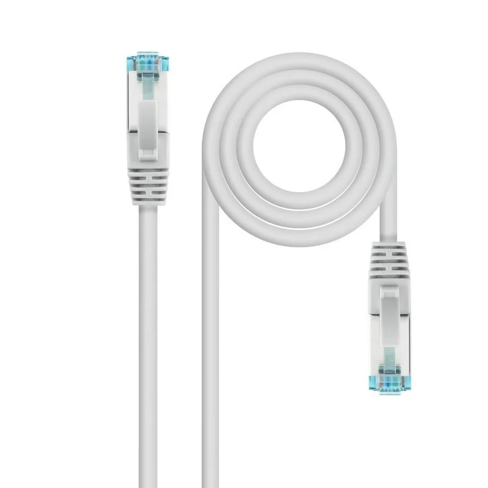

>Os cabos da Categoria 7 são cabos de dados de muito alto desempenho concebidos para velocidades de transmissão até, no máximo, 10 GB por segundo ao longo de 100 m, e com capacidade para gamas de frequências até, no máximo, 600 MHz.
| Sites | Comprar em | Comprimento | Cor | Marca do produto |
|---|---|---|---|---|
| 1 | Pc componentes | 3 metros | Cinzento | Nanocable |
| 2 | Global data | 1 metros | Branco | Nanocable |
| 3 | Leroy merlin | 3 metros | Preto | EFB ELEKTRONIK |
| 4 | Chip 7 | 25 metros | Cinzento | NANOCABLE |
| 5 | Amazon | 3 metros | Preto | Primewire |
| 6 | Worten | 15 metros | Branco | MC YOUR MAX CONNECTION |